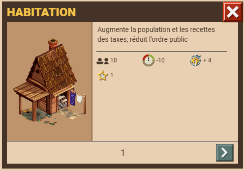

 Habitation Carrière de pierre Maçonnerie
Habitation Carrière de pierre Maçonnerie
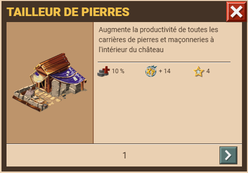
Carrière relique Tailleur de pierre


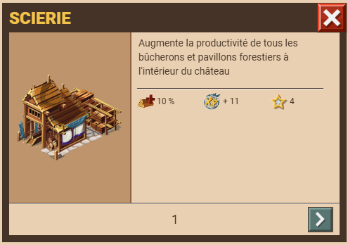
Bûcheron relique Scierie

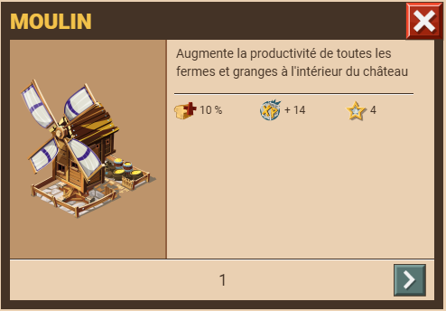
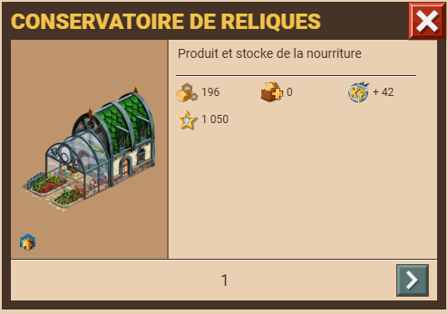
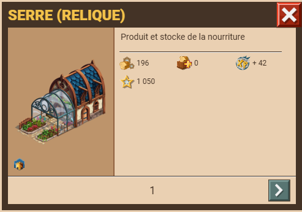
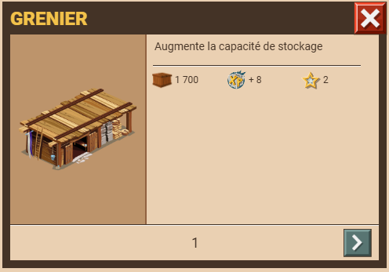
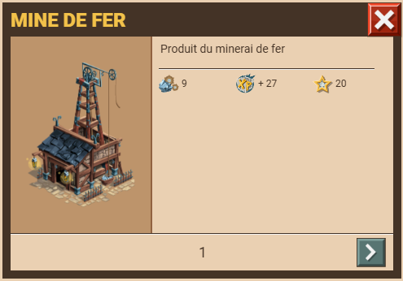
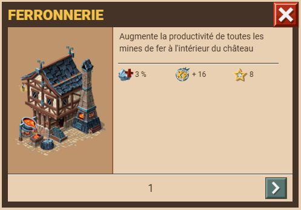
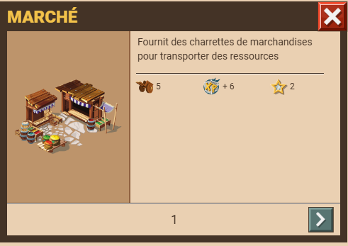
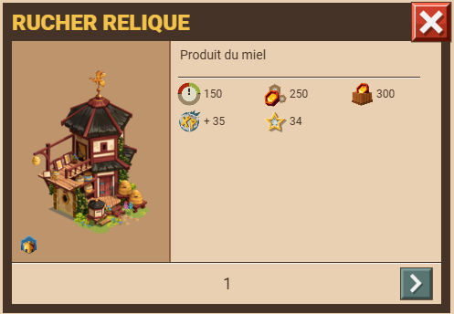
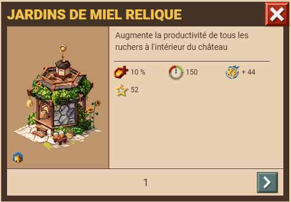
Rucher relique Jardin de miel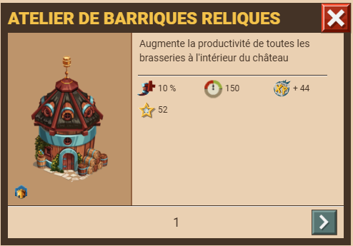
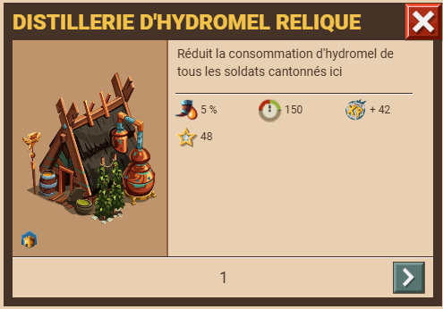
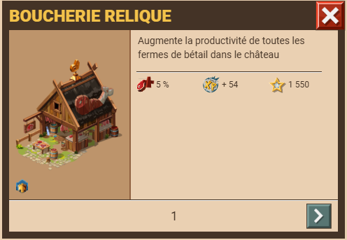
Ferme relique Boucherie relilque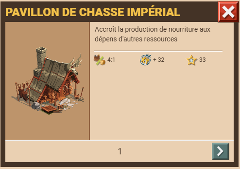
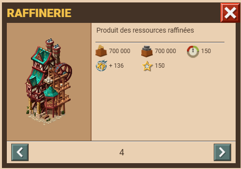
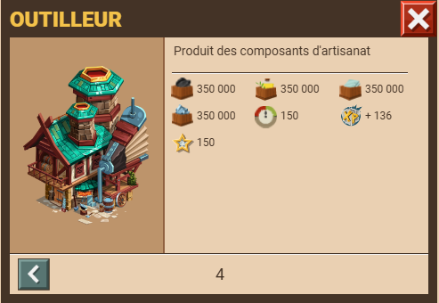
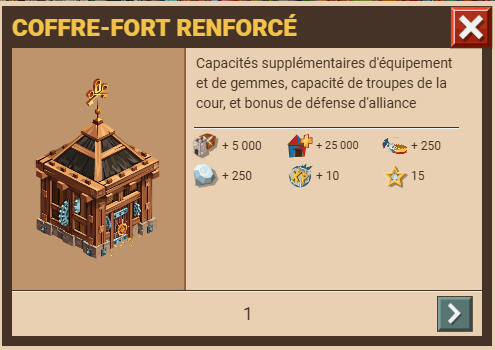
Cofre-fort renforcé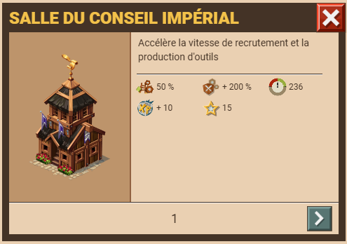
Salle du conseil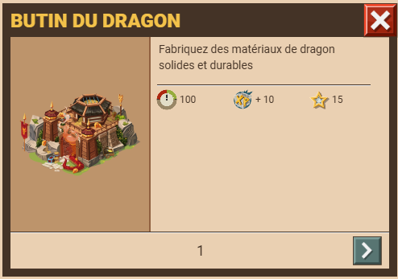
Butin du dragon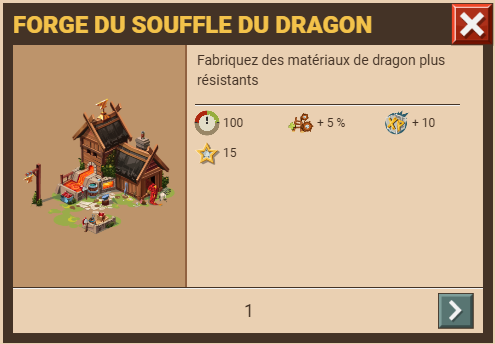
Forge du soufle du dragon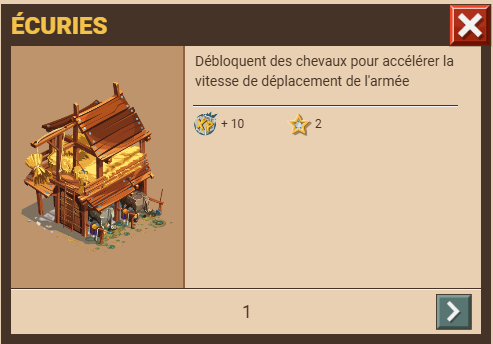
Écuries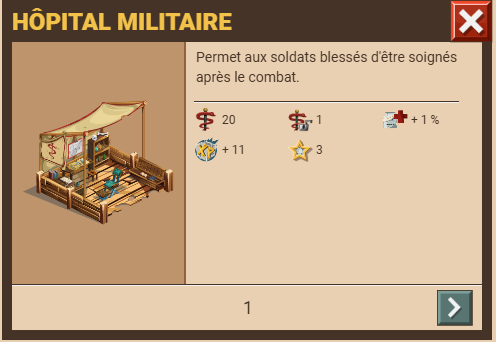
Hôpital militaire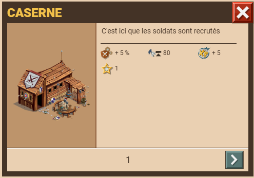
Caserne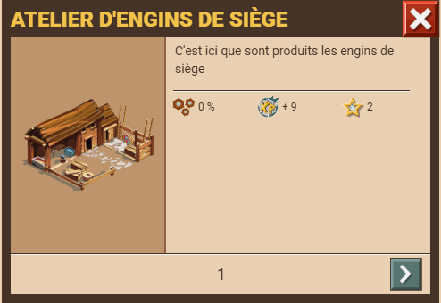
Atelier d'engins de siège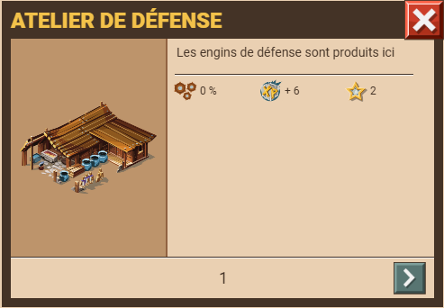
Atelier d'engins de défense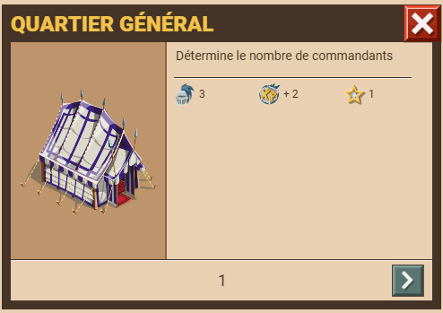
Quartier général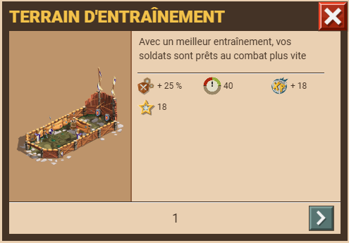
Terrain d'entraînement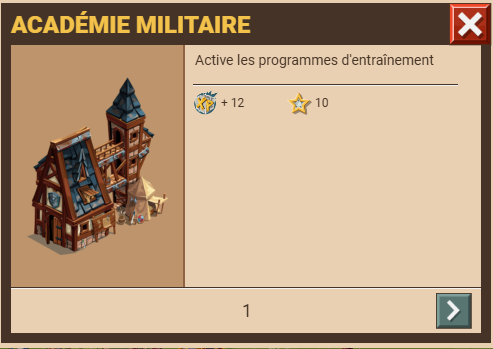
Académie militaire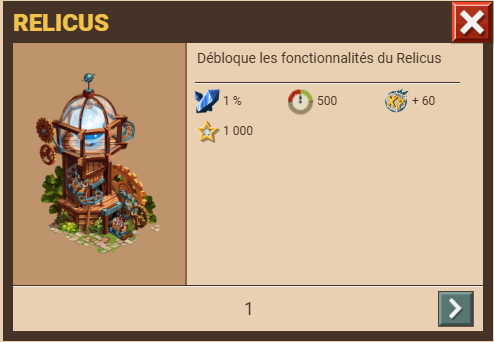
Relicus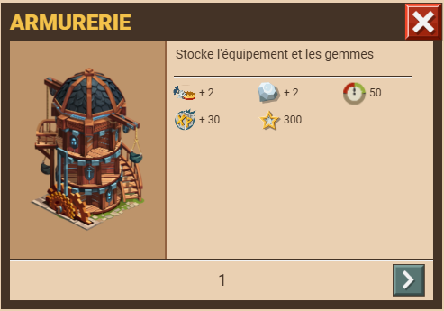
Armurerie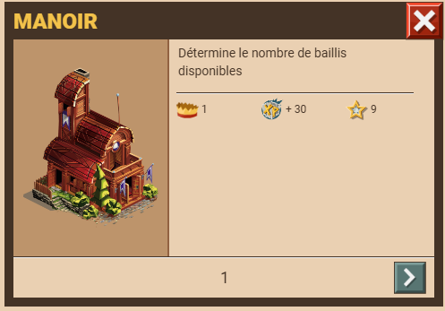
Manoir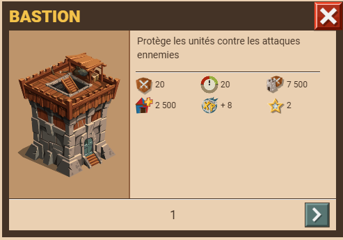
Bastion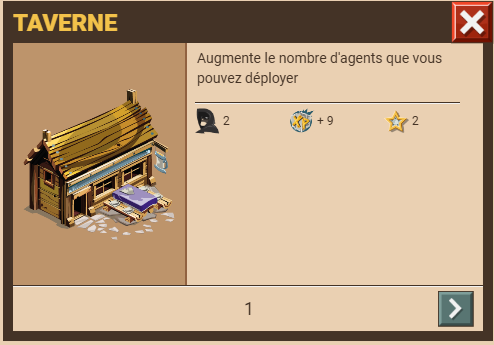
Taverne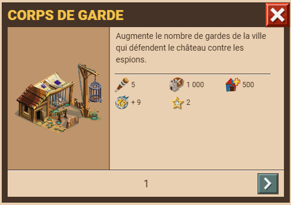
Corps de garde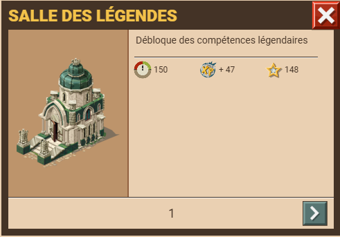
Salle des légendes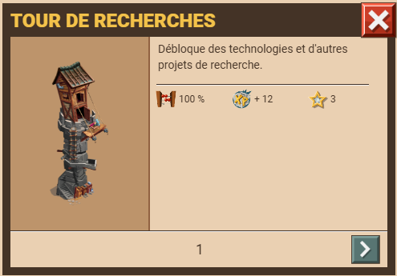
Tour de recherche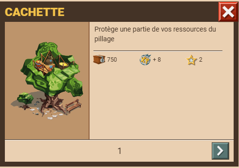
Cachette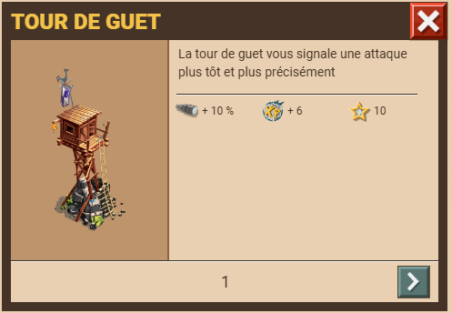
Tour de guet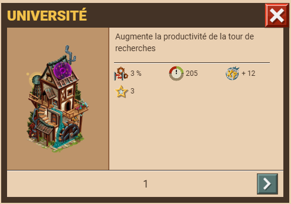
Université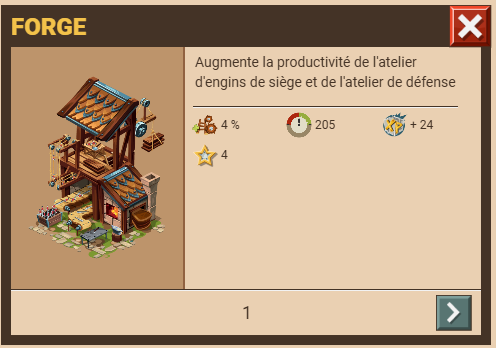
Forge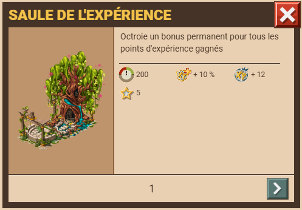
Saule de l'expérience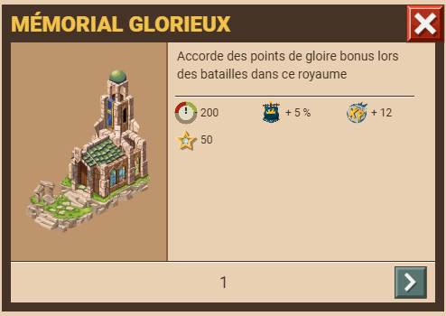
Mémorial glorieux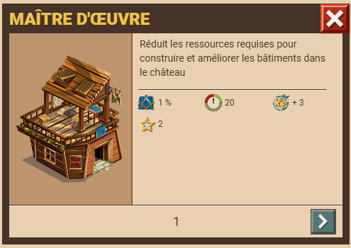
Maître d'oeuvre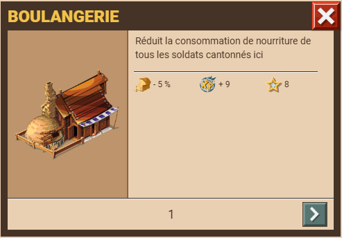
Boulangerie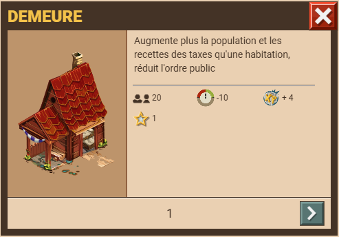
Demeure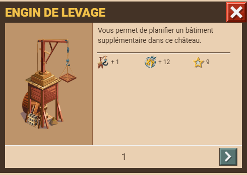
Engin de levage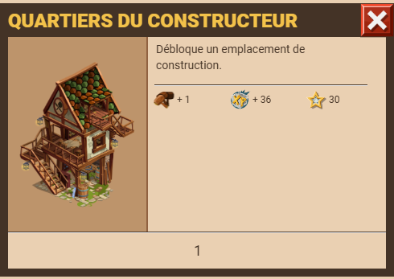
Quartier du constructeur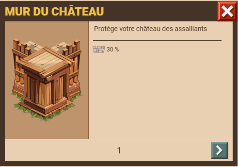
Murs Douves Douves ruru